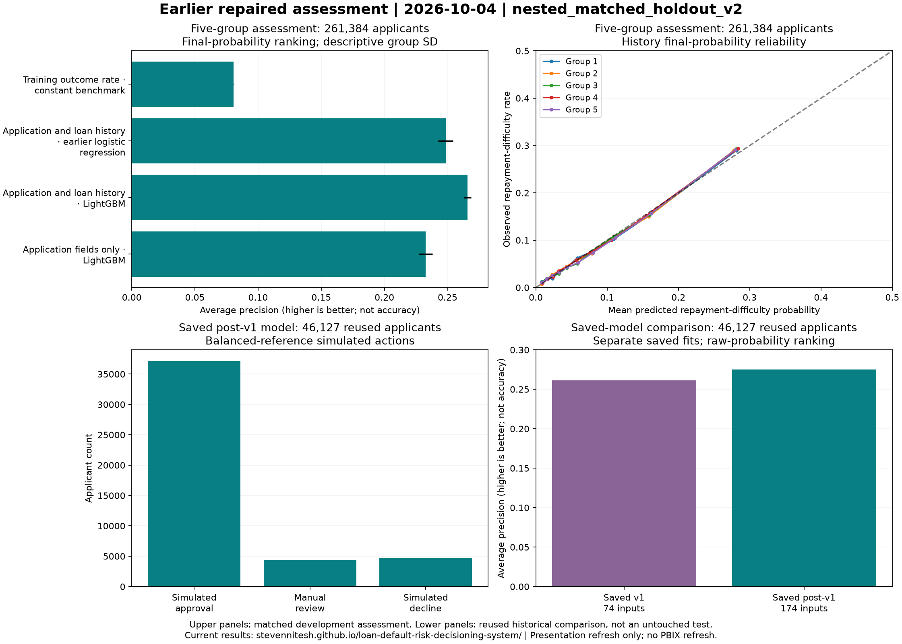

Earlier repaired assessment, 2026-10-04
Earlier completed protocol: nested_matched_holdout_v2. The current report and current technical assessment use nested_inner_cv_v3, completed later on the same date. These earlier values remain separate.
The upper panels assess 261,384 development applicants in five matched test groups. The lower panels compare separate saved models on 46,127 reused historical applicants. Unlabeled Kaggle applications are excluded. Random groups do not establish future-cohort performance; the historical comparison is not an untouched lockbox.

Exact earlier aggregate results
Average precision measures ranking, not accuracy. Brier/log loss measure probability error (lower is better). Utility uses illustrative units, not money or profit.
| Model / input scope | Model family | Grouping seed | Probability view | Metric | Applicant test groups | Mean across groups | Descriptive group SD |
|---|---|---|---|---|---|---|---|
| Application fields only · LightGBM | Tree ensemble | 42 | Final probabilities | Brier score | 5 | 0.068399 | 0.000211 |
| Application fields only · LightGBM | Tree ensemble | 42 | Final probabilities | Log loss | 5 | 0.248743 | 0.000854 |
| Application fields only · LightGBM | Tree ensemble | 42 | Final probabilities | Average precision | 5 | 0.232638 | 0.005492 |
| Application fields only · LightGBM | Tree ensemble | 42 | Final probabilities | ROC AUC | 5 | 0.749246 | 0.002719 |
| Application fields only · LightGBM | Tree ensemble | 42 | Raw probabilities | Illustrative utility per applicant | 5 | 556.224172 | 2.618879 |
| Application fields only · LightGBM | Tree ensemble | 42 | Raw probabilities | Brier score | 5 | 0.173767 | 0.013239 |
| Application fields only · LightGBM | Tree ensemble | 42 | Raw probabilities | Log loss | 5 | 0.519341 | 0.030468 |
| Application fields only · LightGBM | Tree ensemble | 42 | Raw probabilities | Average precision | 5 | 0.232638 | 0.005492 |
| Application fields only · LightGBM | Tree ensemble | 42 | Raw probabilities | ROC AUC | 5 | 0.749246 | 0.002719 |
| Application and loan history · LightGBM | Tree ensemble | 42 | Final probabilities | Brier score | 5 | 0.066696 | 0.000119 |
| Application and loan history · LightGBM | Tree ensemble | 42 | Final probabilities | Log loss | 5 | 0.240738 | 0.000428 |
| Application and loan history · LightGBM | Tree ensemble | 42 | Final probabilities | Average precision | 5 | 0.265750 | 0.002983 |
| Application and loan history · LightGBM | Tree ensemble | 42 | Final probabilities | ROC AUC | 5 | 0.776040 | 0.001532 |
| Application and loan history · LightGBM | Tree ensemble | 42 | Raw probabilities | Illustrative utility per applicant | 5 | 577.437415 | 2.203265 |
| Application and loan history · LightGBM | Tree ensemble | 42 | Raw probabilities | Brier score | 5 | 0.157305 | 0.008401 |
| Application and loan history · LightGBM | Tree ensemble | 42 | Raw probabilities | Log loss | 5 | 0.477672 | 0.019723 |
| Application and loan history · LightGBM | Tree ensemble | 42 | Raw probabilities | Average precision | 5 | 0.265750 | 0.002983 |
| Application and loan history · LightGBM | Tree ensemble | 42 | Raw probabilities | ROC AUC | 5 | 0.776040 | 0.001532 |
| Application and loan history · earlier logistic regression | Logistic regression | 42 | Final probabilities | Brier score | 5 | 0.067500 | 0.000232 |
| Application and loan history · earlier logistic regression | Logistic regression | 42 | Final probabilities | Log loss | 5 | 0.244309 | 0.000972 |
| Application and loan history · earlier logistic regression | Logistic regression | 42 | Final probabilities | Average precision | 5 | 0.248427 | 0.005944 |
| Application and loan history · earlier logistic regression | Logistic regression | 42 | Final probabilities | ROC AUC | 5 | 0.766581 | 0.002102 |
| Application and loan history · earlier logistic regression | Logistic regression | 42 | Raw probabilities | Illustrative utility per applicant | 5 | 568.719577 | 1.845860 |
| Application and loan history · earlier logistic regression | Logistic regression | 42 | Raw probabilities | Brier score | 5 | 0.194906 | 0.000809 |
| Application and loan history · earlier logistic regression | Logistic regression | 42 | Raw probabilities | Log loss | 5 | 0.574360 | 0.002363 |
| Application and loan history · earlier logistic regression | Logistic regression | 42 | Raw probabilities | Average precision | 5 | 0.248427 | 0.005944 |
| Application and loan history · earlier logistic regression | Logistic regression | 42 | Raw probabilities | ROC AUC | 5 | 0.766581 | 0.002102 |
| Training outcome rate · constant benchmark | Constant benchmark | 42 | Final probabilities | Brier score | 5 | 0.074211 | 0.000007 |
| Training outcome rate · constant benchmark | Constant benchmark | 42 | Final probabilities | Log loss | 5 | 0.280544 | 0.000020 |
| Training outcome rate · constant benchmark | Constant benchmark | 42 | Final probabilities | Average precision | 5 | 0.080728 | 0.000008 |
| Training outcome rate · constant benchmark | Constant benchmark | 42 | Final probabilities | ROC AUC | 5 | 0.500000 | 0.000000 |
| Training outcome rate · constant benchmark | Constant benchmark | 42 | Raw probabilities | Brier score | 5 | 0.074211 | 0.000007 |
| Training outcome rate · constant benchmark | Constant benchmark | 42 | Raw probabilities | Log loss | 5 | 0.280544 | 0.000020 |
| Training outcome rate · constant benchmark | Constant benchmark | 42 | Raw probabilities | Average precision | 5 | 0.080728 | 0.000008 |
| Training outcome rate · constant benchmark | Constant benchmark | 42 | Raw probabilities | ROC AUC | 5 | 0.500000 | 0.000000 |
Presentation and scientific provenance
This presentation refresh reads frozen anonymous CSVs and the existing evidence manifest; it does not load models or applicant records. The lower-right raw average-precision panel replaces the original score histogram. Original verification.json HTML/PNG hashes apply to the original figures, recoverable at Git commit 7bcdee0ae22bd715d6527e2884b37bdcdc897823; the empirical evidence and execution fingerprints remain unchanged. Refresh hashes are recorded separately during delivery.
Power BI Desktop, pbi-tools, Tabular Editor and DAX Studio are unavailable on this host. Native PBIX refresh was not performed. Layout metadata confirms two pages and 15/8 visuals, but opaque DataModel measures/relationships/import queries prevent DAX, cross-table filters and CSV import-width certification. Historical dollar formats represent utility weights, not profit.
Technical identity
Assessment f6b58bf8335645b3a1ece2ca3502e173; protocol nested_matched_holdout_v2. Machine keys remain unchanged in the source CSVs.